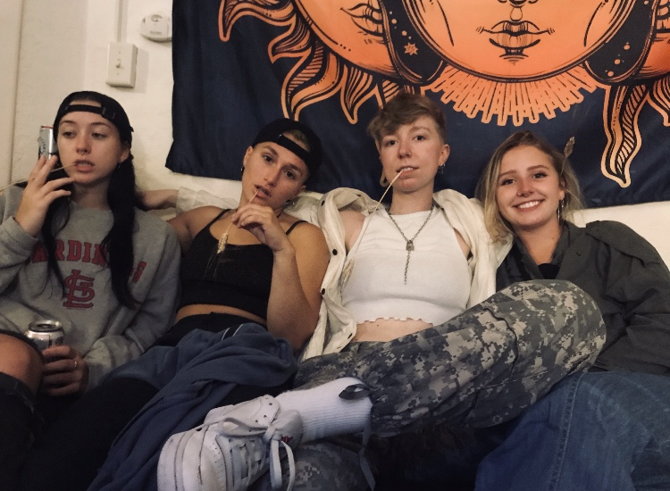

Amy Wisegarver was born in Hillsboro, Oregon (August 14th, 1998), and raised in Sammamish, WA. She went to high school at Eastlake High School in Sammamish, and moved to Bellingham, WA in 2017 to attend Western Washington University to pursue an undergrad degree in graphic design. Amy began dancing at 3 years old, and competed from age 7 to 17, and has dabbled in many other art forms. She also plays the violin and sings, and played in a few bands in high school. Amy hopes to graduate from Western Washington University with a BFA in graphic design, and work for a design firm as UX designer after graduation. She loves Washington, and would love to work in Seattle and eventually make it back to Bellingham one day.
When Amy isn’t in design classes or studying, she enjoys drawing and painting, and reading at local coffee shops. She also likes riding around Bellingham on her motorcycle with friends in the evening, and skydiving in Abbotsford, Canada on the weekends when the weather is nice. She began pursuing her solo skydiving license in 2017, and has continued to skydiving at various drop zones. around Washington and Canada since.
Amy’s parents both work in downtown Seattle, and are both veterans of the U.S. Airforce. They met in Japan in the 80s, and made several moves around the U.S. as a couple before settling in Sammamish. Amy is very close with her older brother, Andrew, who is currently stationed as a Naval Officer in Pensacola, Florida. He is training to become a Navy pilot. Andrew is also a motorcyclist and lover of air sports, and is pursuing his private pilot’s license along with his training with the Navy. Amy’s family also owns a beagle dog named Lindy, who enjoys chasing rabbits in the backyard and cheddar cheese.